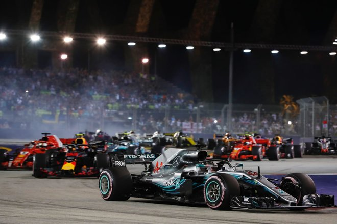
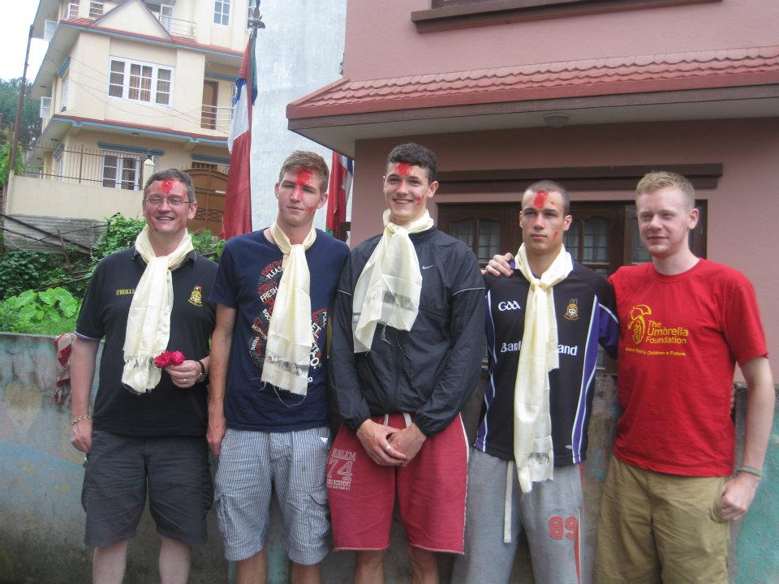

I have followed Formula 1 since I very was young. Lewis Hamilton, Kimi Raikkonen and Daniel Ricardo are a few of my favourite drivers. My favourite race on the circuit is the Singapore Grand Prix which is held at night time under lights. I have not yet been to a formula 1 race but I hope to once I am finished college.

In Nepal I along with a group of students from my school volunteered to work in children homes with an organisation called "The Umbrella Foundation". We worked with very disadvantaged, previously homeless orphans. This experience was very eye opening and rewarding and I hope to do similar volunterr work in the future.
My passion is athletics but I have a love for most sports, in particular American Football and Formula 1. I support the Carolina Panthers who play in the Bank of America Stadium in Charlotte. My favourite player is Cam Newton, the teams quarterback. He is the all time leading quarterback for rushing touchdowns and he is still only 29 years old. In October I will travel to Wembley Stadium in London to see the LA Chargers take on the Tennesse Titans.

I love to travel whenever I get the chance and I am lucky that I get to travel to so many places with my sport. I have also been very lucky to visit places that others might not get an opportunity to visit either through volunterring work such as my trip to Kathmandu, Nepal or my student J1 holiday to Los Angeles.
